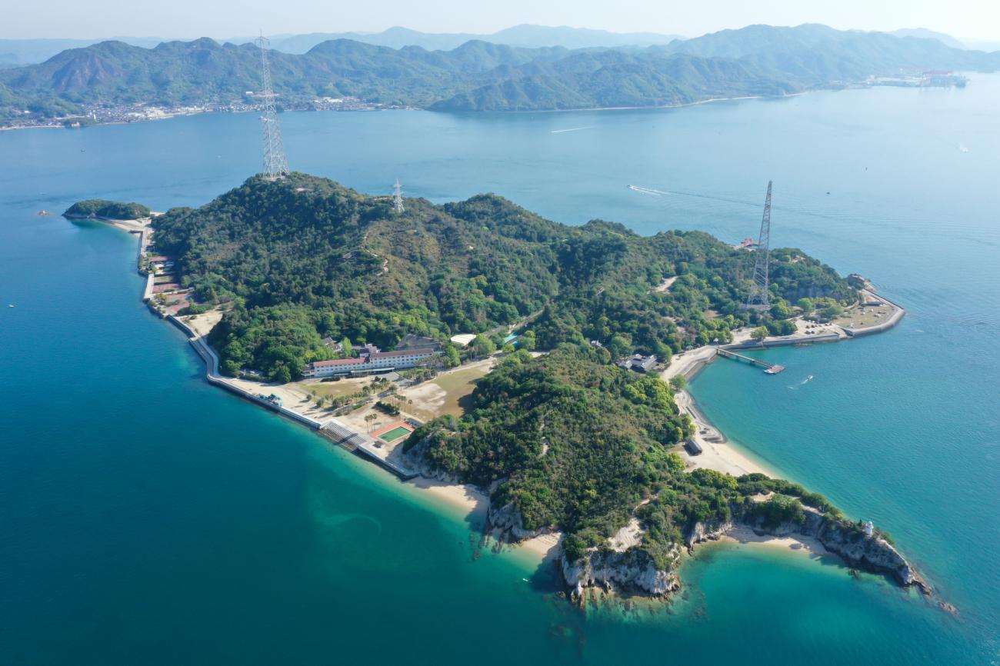
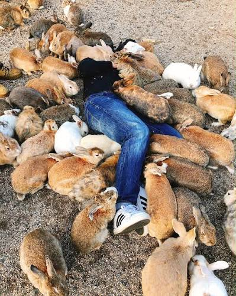

Wist je dat er een konijneneiland bestaat? Nee, dit is geen sprookje of Disney-verhaal. Dit is een echt eiland in de Seto-binnenzee van Japan, genaamd Ōkunoshima (Japans: 大久野島). Het is niet helemaal zeker, hoe al deze tamme konijnen op dit kleine eilandje terecht zijn gekomen. Het is een mysterie, die tot de dag van vandaag verschillende theorieen kweekt.


Een theorie is dat in 1971 een aantal van maar 8 konijnen is vrijgelaten door een groepje schoolkinderen. Een andere theorie is dat de konijnen komen van een groep testkonijnen. Tussen 1927 en 1929 stond er namelijk een fabriek op het eiland, die meer dan zes kiloton aan mosterdgas en tranenkas produceerde om te gebruiken in de Tweede Wereldoorlog.
Een eiland met een donker verleden en schattig heden. Een speciaal verhaal is het zeker.